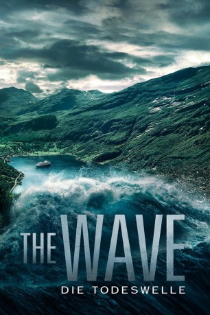

#3244 The Wave - Die Todeswelle
 gesehen am 23.02.2016
gesehen am 23.02.2016
 
 IMDB-Wertung: 6.7 / 10
IMDB-Wertung: 6.7 / 10  Metascore: 68
Metascore: 68 
Geologe Kristian (Kristoffer Joner) steht kurz davor, mit seiner Familie in eine andere Stadt zu ziehen und dort einen neuen Job aufzunehmen. An seinem letzten Arbeitstag im Erdrutsch-Frühwarnzentrum Geiranger bekommt er es jedoch mit einer regelrechten Katastrophe zu tun. Als die Messgeräte plötzlich auffällige Werte anzeigen, vermutet er, dass die Gesteinsschichten des nahe gelegenen Berges Akerneset in Bewegung geraten sind. Nachdem ihm zunächst niemand Glauben schenken will, wird seine Befürchtung jedoch schon bald schreckliche Realität: Gewaltige Felsbrocken stürzen in den Fjord und eine riesige Welle droht die umliegenden Städte und Dörfer unter sich zu begraben. Inmitten der ausbrechenden Panik versucht Kristian seine Familie in Sicherheit zu bringen.
Jahr: 2015
Dauer: 105 Minuten
FSK: 12
Land: Norwegen Studio: UFATonspuren:
Untertitel: Deutsch,
Auflösung: 1080p (1920x806) Größe: 10178 MB
Genre: Action, Thriller, Drama
Regisseur: Roar Uthaug
Drehbuch: John Kåre Raake, Harald Rosenløw-Eeg
Soundtrack: Magnus Beite
Darsteller:
 Kristoffer Joner als Kristian Eikjord
Kristoffer Joner als Kristian Eikjord Ane Dahl Torp als Idun Karlsen
Ane Dahl Torp als Idun Karlsen Fridtjov Såheim als Arvid Øvrebø
Fridtjov Såheim als Arvid Øvrebø- Herman Bernhoft als Georg
- Silje Breivik als Anna
 Thomas Bo Larsen als Phillip
Thomas Bo Larsen als Phillip- Lado Hadzic als Bussjåfør
- Tom Larsen als Mann med mobiltelefon
- Jonas Hoff Oftebro als Sondre
- Edith Haagenrud-Sande als Julia
- Laila Goody als Margot Valldal
 Arthur Berning als Jacob Vikra
Arthur Berning als Jacob Vikra Eili Harboe als Vibeke
Eili Harboe als Vibeke- Håkon Moe als Thomas
- Tyra Holmen als Teresa
- Mette Agnete Horn als Maria
Datei: X:\2015(N-Z)\Wave, The (2015, FSK, 1920x806).mkv seit 21.02.2016
Festplatte: HD 2015(A-Z)
 Es gibt insgesamt 161 Filme in der Gruppe '2015(N-Z)'
Es gibt insgesamt 161 Filme in der Gruppe '2015(N-Z)'